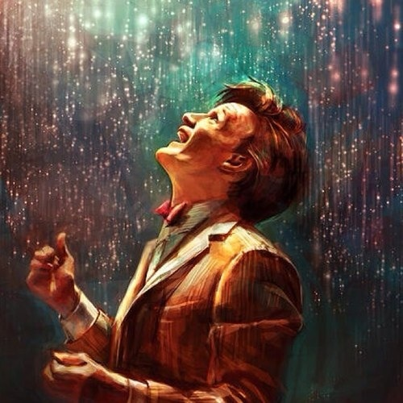

Doctor Who Style Transfer
This is a image style transfer experiment where the styles of the source image
"The Roars of our Stars"
a Doctor Who fan art are applied to the to your webcam feed.
Loading model...

SAVE IMAGE
REFRESH